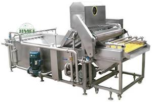
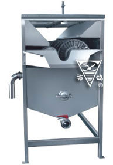
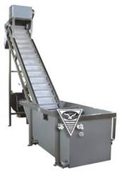

AENG 252 :: Lecture 07 :: FRUITS AND VEGETABLES CLEANING – MACHINERY FOR CLEANING FRUITS AND VEGETABLES, CARE AND MAINTENANCE

Impurities in Freshly Harvested Fruits
- Field Soil
- Dust and surface microorganism
- Fungicide / insecticide etc
- Sap
- Black spots
Fruit and Vegetable Cleaning Machine
Specifications
Capacity : 20 kg/batch
Power requirement : 1 person
RPM : 20 – 30 rpm
Fruit and vegetable : Most fruits & vegetable inclusive mango & tomato
Foreign matter removal :
Field Soil, Dust and surface microorganism, Fungicide / insecticide, Sap, Black spots etc
Multifunctional cleaning machine

The machine is a multifunctional fruit and vegetable cleaning equipment with bubbles, spraying and brush available in cleaning with features such as highly cleanness, energy-saving, water-saving, stable and reliable. This equipment is suitable for cleaning fruits and vegetables. It is easy to operate, convenient in maintenance and wiring.
Fruit cleaning machine
The equipment is suitable for cleaning of ball-shape or oval-shape fruits and vegetables. The fruits and vegetables rotate continuously in all directions randomly. Brushing and spraying is in effect at a same time, with features such as high cleanness. The machine is easy to operate, convenient in maintenance and wiring.
Brush Type Vegetable & Fruit Cleaning Machine

Production capacity
Apple 30T/h
Watermelon 10T/h
Carrot 8T/h
Orange 35T/h
The fruit and vegetable raw materials are making irregular rotation under the effect of rotary brush roller to carry out spraying and brushing simultaneously. The brush is made of high temperature resistant nylon wire through two kinds of technologies such as hair planting and stainless steel winding.
a) Brush fruit cleaning machine for apple and fruits
b) Brush clearing machine for watermelon
c) Brush cleaning machine for carrot vegetable
d) Brush cleaning machine for citrus fruit
Surf Type Fruit Cleaning Machine

The equipment is mainly composed of water cabinet, material turning device, fan and lifter etc. It is widely used for soft washing of fruit and vegetable raw materials. The lifter can be made of complete stainless steel and engineering plastic. It can be additionally provided with spray cleaning device.
Roller with Brush Cleaning Machine
The fruit washing equipment consists of a roller with brush washing (cleaning) machine for washing fruits and vegetables. Roller with brush washing machine is made up of stainless steel tube and brush. The brush is made of polyethylene, and will make revolution as the movement of stainless steel chain. Fruits are driven to circumvolve and washed by brush. At the same time, the bad or rejected fruits are picked up by manual and then sent away by scrap conveying device.
Rolling Drum Brush Washing Machine
The fruit washing equipment consists of a rolling drum brush washing (cleaning) machine for washing root vegetables. Rolling drum brush washing machine is made up of electric motor, water pump, roller drum, supporter, riding wheel, brush, water spraying tubes, feeding funnel, cover board, water box, transmission shaft, supporter for motor, electric control switches, and other parts.
Roller drum is driven to rotate by chain wheel of electric motor through stainless steel chain. When materials enter into the rotating roller drum, they are washed by spraying water and brush. There are two water boxes in our rolling drum brush washing machine. One is used to hold fresh water, and the other with filtering net in it is to recycle water.
| Download this lecture as PDF here |